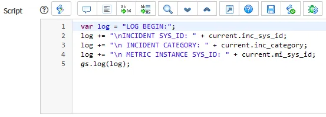
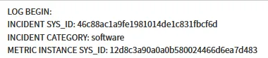

List Choice UI Action on Database View
13 February 2021
We had a very specific use case that involved Assessment Instances, Assessment Instance Questions, and Assessment Feedback Tickets (custom created). If an Assessment with written feedback was analyzed and found to have something worth correcting, a Feedback Ticket should be opened up to the team who resolved that user’s original ticket for root cause analysis and remediation.
In order to facilitate that process, we needed:
-
A way for the survey analysis team to view Assessments along with the recorded Additional Information in the Assessment Question that contained it, filtered so they did not see any that already had a Feedback Ticket associated with it. This would be a database view that joined those three tables.
-
A way for the survey analysis team, once an Assessment worth RCA’ing was found, to easily create a Feedback Ticket.
Given the team would already be working within a filtered Database View, it made sense to give them a UI Action directly within that view. So, I created a List Choice UI Action which would allow them to checkmark the items needing analysis and create Feedback Tickets out of it.
What I found was that, within the server script for this UI Action, you could use the various joined fields together in the same format you use them to join your tables together: current.asmt_sys_id, current.asmtq_sys_id, etc. I was able to send the needed record sys_ids to a Script Include for processing and generating a Survey Feedback ticket.
While I didn’t have a need to send the exact field data over to the Script Include (because I was also calling that function from some other locations, and thus querying the needed data anyway), I can confirm that you can grab not only sys_ids but also field data. Take this example UI Action on the incident_metric OOB Database View:

This Script for the server UI Action will log details from multiple tables.

The resulting log entry shows the result.
In Summary
This can be a pretty nice way to make Database Views more actionable, if you have the need for it.